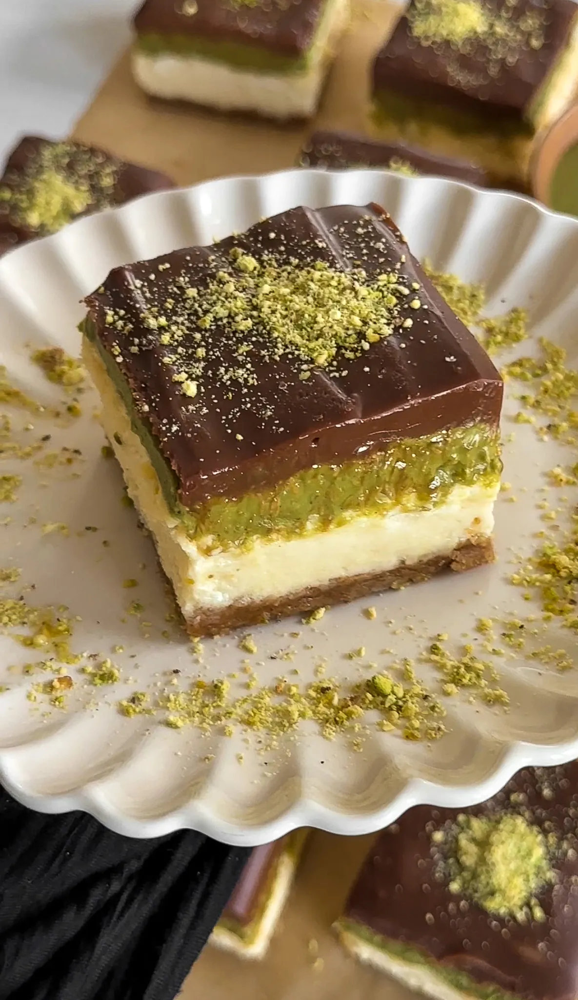

DESSERT
DUBAI CHOCOLATE CHEESECAKE BARS
Prep Time: 45 minutes
Cook Time: 45 minutes
Total Time: 6 hours, includes chilling time
12 Bars
This cheesecake is inspired by the irresistible "Can't Get Knafeh of
It" chocolate bar from Fix Dessert Chocolatier in Dubai. If you've
ever tasted that creamy, pistachio-filled bar with its perfect mix
of crunchiness and smoothness, you’ll love this twist! Combining
graham cracker crust, silky cream cheese filling, crispy pistachio
kunafa, and rich chocolate ganache, it’s a dessert that brings
together all the magic of that iconic chocolate bar in a whole new
way.
DESSERT
DUBAI CHOCOLATE CHEESECAKE BARS
Prep Time: 45 minutes
Cook Time: 45 minutes
Total Time: 6 hours, includes chilling time
12 Bars
DUBAI CHOCOLATE CHEESECAKE BARS
This cheesecake is inspired by the irresistible "Can't Get Knafeh of
It" chocolate bar from Fix Dessert Chocolatier in Dubai. If you've
ever tasted that creamy, pistachio-filled bar with its perfect mix
of crunchiness and smoothness, you’ll love this twist! Combining
graham cracker crust, silky cream cheese filling, crispy pistachio
kunafa, and rich chocolate ganache, it’s a dessert that brings
together all the magic of that iconic chocolate bar in a whole new
way.
INGREDIENTS
CRUST
- 1 2/3 cup graham cracker crumbs, very fine
- 8 tablespoons unsalted butter, melted
- 3 tablespoons granulated white sugar
CHEESECAKE FILLING
- 24 ounces cream cheese, room temperature
- 1 cup white sugar
- 3 large eggs, room temperature
- 1/4 cup heavy cream
- 1/4 cup sour cream
- 2 teaspoons vanilla extract
- pinch of salt
PISTACHIO KUNAFA
- 2 cups kataifi (shredded phyllo)
- 1/2 cup vegetable oil, for frying
- 1 1/4 cup pistachio cream
CHOCOLATE GANACHE
- 1 cup milk or semi-sweet chocolate
- 1/2 cup heavy cream
INSTRUCTIONS
CRUST
- Line an 8x8-inch square pan with parchment paper.
- In a medium bowl, combine graham cracker crumbs, melted butter,
and granulated white sugar. Mix until well combined.
- Press the mixture into the bottom of the prepared pan, creating
an even crust. Set aside.
CHEESECAKE FILLING
- Preheat the oven to 325°F (163°C).
- In a large bowl, beat the cream cheese and white sugar together
until smooth and creamy using an electric mixer.
- Add the eggs, one at a time, beating well after each
addition.
- Stir in the heavy cream, sour cream, vanilla extract, and a
pinch of salt. Mix until smooth and fully incorporated.
- Pour the cheesecake filling into the prepared crust and smooth
the top with a spatula.
- Bake for 35 minutes, or until the edges are set but the center
is slightly jiggly.
- Let the cheesecake cool on the counter for 1 hour, then transfer
it to the refrigerator to chill for at least 4 hours, or
overnight.
PISTACHIO KUNAFA
- Heat vegetable oil in a large frying pan over medium heat.
- Once hot, fry the kataifi until golden and crispy, stirring
occasionally. Remove from the pan and set aside to drain on
paper towels.
- Once the kataifi has cooled, mix it with pistachio cream
until fully combined. Set aside.
CHOCOLATE GANACHE
- In a microwave-safe bowl, heat the heavy cream in the microwave
until it just begins to simmer (about 30-45 seconds).
- Pour the hot cream over the chocolate and let it sit for 10
minutes.
- After 10 minutes, stir the mixture until smooth and fully
melted.
ASSEMBLY
- Once the cheesecake has chilled, top it with the pistachio
kunafa mixture, spreading it evenly across the top.
- Drizzle the chocolate ganache over the pistachio kunafa and
cheesecake layer.
- Refrigerate the cheesecake for an additional 30 minutes to allow
the ganache to set before slicing and serving.